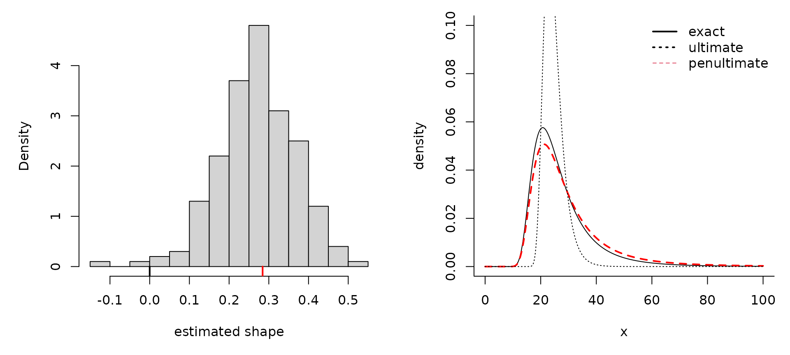

Penultimate approximations
Léo Belzile
2022-04-25
Source:vignettes/03-penultimate.Rmd
03-penultimate.RmdTheory
The generalized extreme value (GEV) distribution arises as the non-degenerate limiting distribution of maxima. A key property of the generalized extreme value distribution is max-stability, meaning that the distribution of maxima of \(T \in \mathbb{N}\) is the same up to a location-scale transform: if \(F \sim \mathsf{GEV}\), then there exist location and scale constants \(b \in \mathbb{R}\) and \(a>0\) such that \(F^T(ax+b) = F(x)\). The parameters of the new distribution are easily derived: if \(X_i \stackrel{\cdot}{\sim} \mathsf{GEV}(\mu,\sigma, \xi)\), then \(\max\{X_1, \ldots, X_T\} \sim \mathsf{GEV}(\mu_T, \sigma_T, \xi)\) with \(\mu_T = \mu - \sigma(1-T^\xi)/\xi\) and \(\sigma_T = \sigma T^\xi\) for \(\xi \mathbb{N}eq 0\), or \(\mu_T = \mu +\sigma \log(T)\) and \(\sigma_T = \sigma\) if \(\xi=0\).
In practice, the GEV is fitted to data that are partitioned into \(k\) blocks of sizes \(m\), assumed eequal for simplicity, so that \(n = km\). The quality of the generalized extreme value approximation increases with the block size \(m\). For fixed block sizes, the estimated shape parameter generally differs from its asymptotic counterpart and this discrepancy usually introduces bias if one extrapolates far beyond the range of the observed data.
Let \(F(x)\) denote a thrice-differentiable distribution function with endpoint \(x^*\) and density \(f(x)\) and define \(s(x)=-F(x)\log\{F(x)\}/f(x)\). The existence of the limit \(\xi_{\infty} = \lim_{n \to \infty} s'\{b_n\}\) is necessary and sufficient for convergence to an extreme value distribution \(G\), \[\begin{align*} \lim_{n \to \infty} F^n(a_nx+b_n) = \exp\left\{-(1+\xi_\infty x)^{-1/\xi_\infty}\right\}=G(x). \end{align*}\]
Smith (1987) shows that, for any \(x \in \{y:1+\xi_\infty y >0\}\), there exists \(z\) such that \[\begin{align*} \frac{-\log[F\{v+xs(v)\}]}{-\log\{F(v)\}} = \left\{1+xs'(z)\right\}^{-1/s'(z)}, \qquad v < z < v+xs(v). \end{align*}\] For each \(n \geq 1\), setting \(v=b_n\) and \(a_n=s(b_n)\) yields \[\begin{align*} F^n(a_nx+b_n)=\exp\left[-\left\{1+s'(z)x\right\}^{-1/s'(z)}\right] + \mathrm{O}(n^{-1}) \end{align*}\] for \(z \in [\min(a_nx+b_n, b_n), \max(a_nx+b_n, b_n)]\), depending on the support of \(F\). The ultimate approximation replaces \(s'(z)\) by \(s'(x^*)=\xi_{\infty}\), whereas Smith (1987) suggests instead suggests taking \(s'(b_n)\), which is closer to \(s'(a_nx+b_n)\) than is \(s'(x^*)\).
The maximum likelihood estimate of the shape should change as the threshold or the block size increases. Consider for simplicity yearly maxima arising from blocking \(m=n_y\) observations per year. We are interested in the distribution of the maximum of \(N\) years and thus the target has roughly shape \(\xi_{Nn_y}\), but our estimates will instead give approximately \(\xi_{n_y}\); an extrapolation error arises from this mismatch between the shape values, which would be constant if the observations were truly max-stable. The curvature of \(s'\) determines how stable the estimates of \(\xi_t\) are when the extrapolation window increases.
We illustrate the previous discussion by looking at block maximum from a log-normal distribution.
library(mev)
set.seed(123)
x <- seq(1, 30, length = 200)
fitted <- t(
replicate(
n = 200,
fit.gev(
xdat = apply(
X = matrix(rlnorm(30 * 100),
ncol = 30),
MARGIN = 1,
FUN = max),
method = "BFGS")$est))
penult.bm.lnorm <-
mev::smith.penult(model = "bm",
m = (m <- 30),
family = "lnorm")
par(mfrow = c(1, 2), mar = c(5, 5, 1, 1))
hist(
fitted[, 3],
probability = TRUE,
breaks = 20,
xlab = "estimated shape",
main = ""
)
segments(
y0 = -0.5,
y1 = 0,
x0 = penult.bm.lnorm$shape,
col = "red",
lwd = 2
)
segments(
y0 = -0.5,
y1 = 0,
x0 = 0,
col = "black",
lwd = 2
)
p30 <- penult.bm.lnorm
x = seq(0, 100, length = 400)
N <- 1000
N30 = N / 30
plot(
x,
N * exp((N - 1) * plnorm(x, log.p = TRUE)) *
dlnorm(x),
type = "l",
bty = "l",
ylim = c(0, 0.1),
xlab = "x",
ylab = "density"
)
# Get parameters of maximum of N GEV
maxstabp <- function(loc, scale, shape, N) {
if (!isTRUE(all.equal(shape, 0, check.attributes = FALSE))) {
mut <- loc - scale * (1 - N ^ shape) / shape
sigmat = scale * N ^ shape
return(c(
loc = mut,
scale = sigmat,
shape = shape
))
} else{
mut <- loc + scale * log(N)
return(c(
loc = mut,
scale = scale,
shape = shape
))
}
}
p30e <-
maxstabp(
loc = p30$loc,
scale = p30$scale,
shape = p30$shape,
N = N30
)
lines(
x,
evd::dgev(
x,
loc = p30e['loc'],
scale = p30e['scale'],
shape = p30e['shape']
),
col = "red",
lwd = 2,
lty = 2
)
p30l <-
maxstabp(
loc = p30$loc,
scale = p30$scale,
shape = 0,
N = N30
)
lines(
x,
evd::dgev(
x,
loc = p30e['loc'],
scale = p30l['scale'],
shape = 0
),
col = 1,
lty = 3,
lwd = 1
)
legend(
x = "topright",
legend = c("exact", "ultimate", "penultimate"),
col = c(1, 1, 2),
lwd = c(2, 2, 1),
bty = "n",
lty = c(1, 3, 2)
)
The left panel illustrates how maximum likelihood estimates of the parameters for repeated samples from a log-normal distribution are closer to the penultimate approximation than to the limiting tail index \(\xi_{\infty}=0\). Using max-stability, we could get an estimate of the distribution of the maximum of \(Nn_y\) observations. In this case, the penultimate shape for \(m=1000\) is approximately \(\xi_{1000}=0.215\), compared to \(\xi_{30} \approx 0.284\), which is far from the limiting value \(\xi_{\infty}=0\). The extrapolated density estimate is based on \(F_1^{1000/30}\), the generalized extreme value density associated to the distribution function of the penultimate approximation \(F_1^{1000/30}\), with \(F_1 \sim\mathsf{GEV}(a_{30}, b_{30}, \xi_{30})\). The penultimate approximation \(F_2\) is more accurate than the ultimate approximation \(\mathsf{GEV}(a_{30}, b_{30}, \xi_\infty)\), which is too short tailed.
The function smith.penult computes the penultimate
approximation for parameter models in R for the
distribution assuming a model family with arguments
dfamily, qfamily and pfamily
exist. It returns the penultimate parameters for a given block size or
quantile in case of threshold models. These functions are particularly
useful for simulation studies in which one wants to obtain an
approximation for \(F^N\) for large
\(N\), to get an approximation to the
asymptotic distribution of a test statistic for finite \(N\); the \(\mathsf{GEV}\) penultimate approximation is
more numerically stable for certain models and its moments and cumulants
are easily derived.
The following plot illustrates the penultimate shape parameter for the normal distribution based on threshold exceedances. In finite samples, the upper tail is bounded, but the quality of the approximation by the Gumbel distribution increases as \(u \to \infty\), albeit very slowly.
u <- seq(0.8, 0.9999, by = 0.0001)
penult <- smith.penult(family = "norm",
method = "pot",
u = qnorm(u))
plot(
u,
penult$shape,
bty = "l",
type = 'l',
xlab = 'quantile',
ylab = 'penultimate shape'
)While the above discussion has been restricted to block maxima and the generalized extreme value distribution, similar results exists for peaks over threshold using a generalized Pareto distribution. For threshold exceedances, we start with the reciprocal hazard \(r(x) = \{1-F(x)\}/f(x)\) in place of \(s(x)\). The normalizing constants are \((u, r(u))\) and the penultimate shape parameter for the generalized Pareto distribution is \(r'(u)\).
We can relate threshold exceedances to the distribution of maxima as follows: suppose a generalized Pareto distribution \(F\) is fitted to threshold exceedances above a threshold \(u\), with parameters \((\zeta_u, \sigma_u, \xi)\), where \(\zeta_u\) denotes the unknown proportion of points above the threshold \(u\). If there are \(n_y\) observations per year on average, then the \(T\)-year return level is \(z_{1/T}=u+\sigma_u/\xi\{(Tn_y\zeta_u)^\xi-1\}\). We take \(F^{\zeta_uTn_y}\) as the approximation to the \(T\)-year maxima distribution, conditional on exceeding \(u\).
Exercice
- Sample observations from the standard Gaussian distribution \(\mathsf{No}(0,1)\) for \(m = 25, 50, 100, 1000\) and \(k=1000\) replications.
- Fit a generalized extreme value distribution to block maxima of size
\(m\). Obtain an estimate of the
distribution of \(m = 1000000\)
observations from a standard Gaussian using max-stability (the functions
fit.gevandgev.mlecan be useful). - Plot the density of the resulting approximations and compare them to the density of the true distribution \(N\phi(x)\Phi^{N-1}(x)\).
- Superpose the density of the penultimate approximation for \(m = 1000000\) obtained using the Smith
penultimate approximation (
smith.penult).